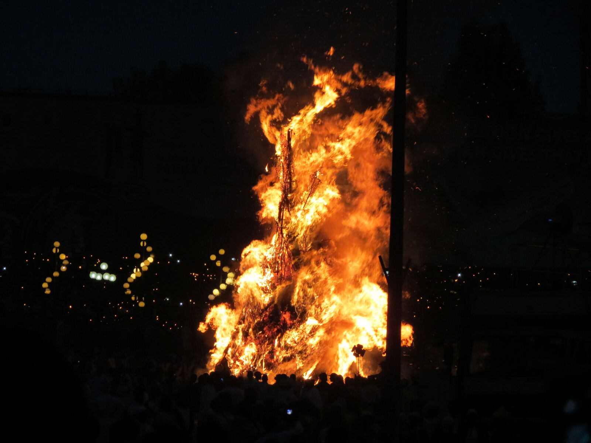
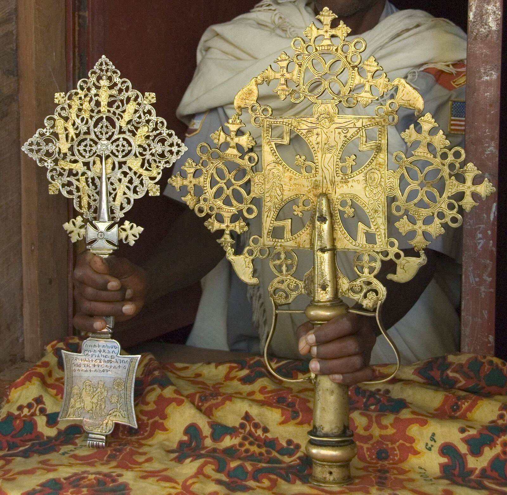
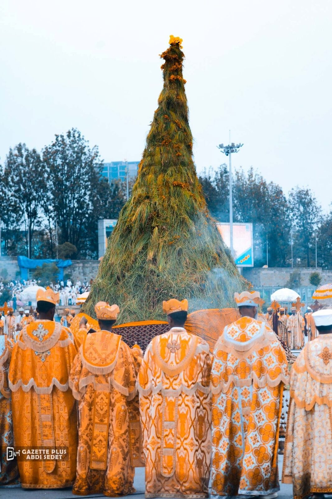
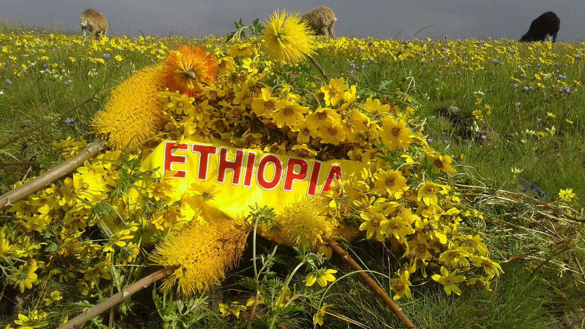
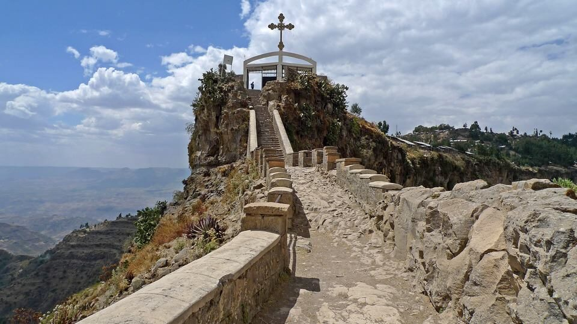

The Finding of the True Cross: a feast of fire, flowers, and faith in the Ethiopian Orthodox Tewahedo tradition.
The faithful gather around a great bonfire crowned with a wooden cross and yellow flowers. This page is a short guide to what we celebrate, and why it still matters.
Meskel (መስቀል) is the Ge'ez and Amharic word for "cross." It is the name of one of the great feasts of the Ethiopian and Eritrean Orthodox Tewahedo Churches: the commemoration of the finding of the True Cross on which Christ was crucified.
To understand why, the story has to begin earlier. Humanity had suffered greatly for the sin Adam and Eve committed through the temptation of the Devil, and the whole human race was rendered slave to Satan. It was not until our Lord Jesus Christ, one of the three Persons of the Holy Trinity, came that we were redeemed.
Christ came into the world in human form to atone for the wrongdoing of humankind and fulfill divine justice. Through His death He reopened the gate of heaven, which until then no human, sinner or righteous, could enter. Between our Creator and us stood a great wall that no one could tear down but our Lord Jesus Christ Himself.
The Church teaches that the Cross was not a surprise. It had been foreshadowed for centuries in the Scriptures, in wood and staff and serpent, waiting to be understood.
"Thou hast set up a banner for those who fear thee, to rally to it from the bow, that thy beloved may be delivered." Psalm 59:4 (LXX numbering)
Before the Crucifixion, the cross was the symbol of the death penalty, of curse and humiliation. But after Christ's crucifixion upon it, the cross became a sign of spiritual freedom and a throne of peace: a sign of freedom and victory for all Christians.
Constantine the Great is said to have seen the Cross appear in the sky in a form of light, and from that vision it has lived on as a symbol of victory. As Saint Paul wrote, "the preaching of the cross is to them that perish foolishness; but unto us which are saved, it is the power of God" (1 Corinthians 1:18). The faithful who cross themselves in its sign are taught that they overcome demons and evil desires through it.

"The Cross is our power, the Cross is our strength, the Cross is our ransom, the Cross is the salvation of our soul." From the Church's hymns of veneration to the Holy Cross
The Cross went on working countless miracles among believers: the sick were healed simply by touching it. Drawn by these wonders, many came to faith. Seeing this, those who resented it threw the Cross into a rubbish pit, and over time the refuse piled so high that the place took the shape of an ordinary hill.
Decades later, in the year 70, the Roman general Titus invaded Jerusalem and its Christians scattered. By the time they could return, the city itself had changed so much that even those who knew roughly where the Cross lay could no longer place it. It would remain hidden for more than three hundred years.
Two hundred years passed before Queen Helena, mother of Constantine the Great, set out to find where the Cross was buried and recover it. She prayed for God's will and help, then journeyed to Jerusalem to carry out her search. But after so long, no one could tell her the exact place.
She sought the counsel of an elder named Kiriakos, who advised her:
"You need not tire out yourself and others in vain. Make people gather wood and pile it. Put incense on it and burn it. Following where the smoke drifts, dig, and you will find the Cross." Attributed to the elder Kiriakos, in the Synaxarium of Megabit 10
Helena did as she was told. She summoned the priests to mass prayer, lit the bonfire, and watched the smoke billow into the sky and bend down over one hill. She had that place dug, and three crosses were unearthed there; the True Cross was known from the other two by the enormous miracles it worked. This is why the Church keeps two dates in its honor each year: Meskerem 17 (September 27) when Helena began to dig, and Megabit 10 (March 19) when the Cross was finally found.
The word Demera means "gathering" or "bundle." It is the name given to the great pyre built each year in memory of Helena's bonfire: a tall, conical stack of branches, decorated with bunches of golden flowers and topped with a wooden cross.
On the eve of the feast, people bring bundles of wood and small torches, known as chibo, to build the Demera together. Priests pray over it and sing, then lead a procession that circles it, chanting, "Iyoha Abebaye, Meskerem Tebaye": behold, Meskerem has dawned, and the flowers have blossomed. At home, families light their own chibo and keep the feast in miniature.
In some places the Demera is lit that same evening; in others, only the following morning. Either way, it is the same fire, and the same remembrance.

Those who gather around the fire while it burns describe an inner feeling of brightness, a warmth beyond the fire itself. The following morning brings the Meskel festivity proper: believers return to the site and, using its ashes, mark their foreheads with the sign of the cross, and sprinkle it over their cattle too.
It is a quiet, personal act at the close of a communal celebration. The cross traced in ash, like the hand crosses priests carry and offer for the faithful to kiss, carries forward the same faith that first found the Cross beneath the hill.

Every September, as Ethiopia's long rainy season ends, the highlands fill with Adey Abeba, also known as Meskel Daisies: small, brilliant yellow flowers that bloom nowhere else in the world at this scale. Their mass blooming coincides with the feast itself, so closely that the two have become inseparable.
The flowers are cut and bundled to decorate the Demera and the doors of churches and homes; children weave them into crowns and garlands. Their sudden gold against the green hills is, for many Ethiopians, the surest sign that a season of renewal, homecoming, and celebration has arrived.
In the Middle Ages, the Patriarch of Alexandria, who held part of the True Cross, gave the Ethiopian Emperor Dawit a piece of it in return for the protection Ethiopia afforded to Coptic Christians. That piece is reputedly held to this day at Gishen Mariam church, about seventy kilometers northwest of Dessie in northern Ethiopia, and Ethiopians have kept this day in its honor for a millennium.
Meskel is kept not only by the Ethiopian Orthodox Tewahedo Church but, in smaller ways, by Ethiopian and Eritrean Catholic and Protestant communities too: a feast that draws the wider Christian family together, in every place its people have made a home. Our forefathers preserved this age-old tradition; passing it on to the coming generations now lies with each of us.

In 2013, UNESCO inscribed the celebration, "the commemoration feast of the finding of the True Holy Cross of Christ," on the Representative List of the Intangible Cultural Heritage of Humanity, recognizing its role in strengthening family ties, reconciliation, and community across generations.
If you are reading this while the Demera burns nearby and would like to know more about our church, or to join us for a service, we would love to have you.
Hohite Semay Saint Mary Ethiopian Orthodox Tewahido Church
304 Eighth Street, New Westminster, BC V3M 3R1